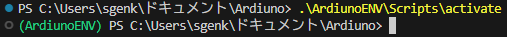
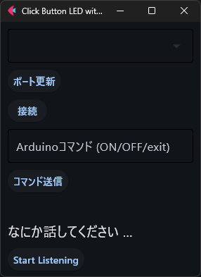
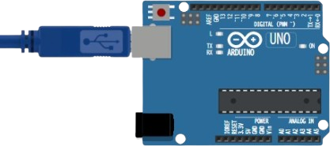
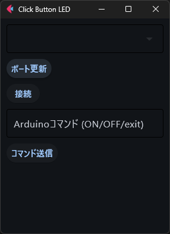
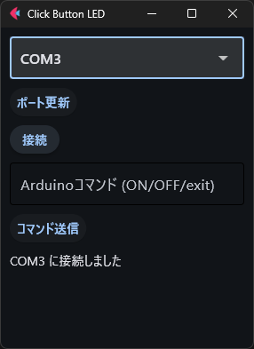
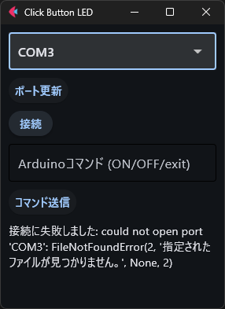
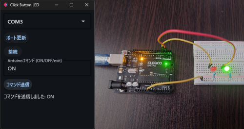
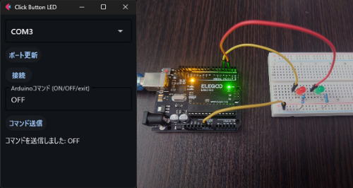
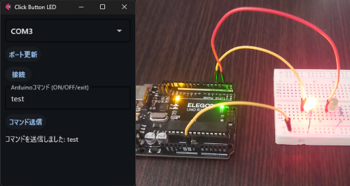
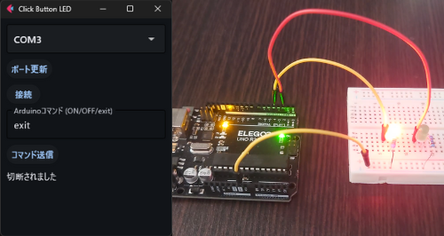

テキストテキストテキスト
テキストテキストテキストテキストテキストテキストテキストテキストテキスト テキストテキストテキストテキストテキストテキストテキストテキストテキスト テキストテキストテキストテキストテキストテキストテキストテキストテキスト
テキストテキストテキストテキストテキストテキストテキストテキストテキスト テキストテキストテキストテキストテキストテキストテキストテキストテキスト テキストテキストテキストテキストテキストテキストテキストテキストテキスト
今回はArduinoとPythonを繋ぎPythonでLチカを制御できるようにします。 なぜ、ハードウェアにボタンをつけてON/OFFを制御しないのか？なぜC言語だけで完結させないのか？ Pythonのライブラリが多いのとコマンド送信という概念を学びたかったからです。実際にPythonのプログラムを書いてみましょう
はじめにPython仮想環境を作成しましょう。Pythonの仮想環境は,powershellやコマンドプロンプトで 「python -m venv [仮想環境名]」のように記述して実行すことで作成することができます。 私は以下のように書きます。
python -m venv ArdiunoENV
次に仮想環境を起動させて仮想環境内に必要なライブラリのインストールを行います。 コマンドプロンプト上で「.\[仮想環境名]\Scripts\activate」 と打つことで実行できます。
.\ArdiunoENV\Scripts\activate
※ . は作成した仮想環境へのパスを表しており、今回はプロジェクト直下に venv環境があることを想定しています。コマンドを実行している場所にvenv 環境がない場合は . の部分のパス適宜書き換えてください。
仮想環境を起動させることができたらPythonライブラリーの「Flet」 と「pyserial」をインストールしましょう。Pythonのライブラリーを インストールする際には「pip install [ライブラリー名]」と記述することで 実行することができます。実際に以下のコードパワーシェルに記述して実行してみましょう。
pip install flet
pip install pyseri
flet：UIコンポーネントを作成するためのライブラリ
serial.tools.list_portsシリアルポートの情報を取得するためのモジュール
speech_recognition音声認識を行うためのライブラリ
import flet as ft
import serial.tools.list_ports
import speech_recognition as sr
main関数は、Fletアプリケーションのエントリーポイントです。
ページのタイトルとウィンドウサイズを設定します。
def main(page: ft.Page):
page.title = "Dr.stone Petrification Ray"
page.window.width = 300
page.window.height = 400
page.window.min_width = 300
page.window.min_height = 400
シリアルポートのリストを更新し、ドロップダウンメニューに反映します。この関数はイベント
eを引数として取ります。
ports：現在のシリアルポートのリストを取得する
portsList：COMポート名だけを抽出したリストです。
ports_dropdown.options：COMポート名のオプションを設定します。
page.update()：ページを更新します。
def update_ports(e):
ports = serial.tools.list_ports.comports()
portsList = [str(port.device) for port in ports] # COMポート名だけを取得
ports_dropdown.options = [ft.dropdown.Option(port) for port in portsList]
page.update()
選択されたシリアルポートに接続し、接続の状態をラベルに表示します。
この関数もイベントeを引数として取ります。
com_port：選択されたCOMポート名です
serialInst.port：com_portを設定します
serialInst.baudrate：9600を設定します
serialInst.open()：シリアルポート接続を開きます。
成功した場合、status_label.valueに接続メッセージを設定メッセージを設定します
失敗した場合、例外メッセージを設定します
最後にpage.update()でページを更新します
def connect_serial(e):
com_port = ports_dropdown.value
serialInst.port = com_port
serialInst.baudrate = 9600
try:
serialInst.open()
status_label.value = f"{com_port} に接続しました"
except Exception as ex:
status_label.value = f"接続に失敗しました: {ex}"
page.update()
シリアルポートにコマンドを送信し、必要に応じてポートを閉じます。
この関数はコマンド command を引数として取ります。
serialInst.is_open：ポートが開いているか確認します。
serialInst.write(command.encode('utf-8'))：コマンドを送信します
コマンドが'exit'の場合、ポートを閉じてstatus_label.valueに切断メッセージを設定します。
serialInst.baudrate = 9600：通信のためのボーレートを設定します。
それ以外の場合、送信メッセージを設定します。
ポートが開いていない場合、警告メッセージを設定します。
最後にpage.update()でページを更新します
def send_command(command):
if serialInst.is_open:
serialInst.write(command.encode('utf-8'))
if command == 'exit':
serialInst.close()
status_label.value = "切断されました"
else:
status_label.value = f"コマンドを送信しました: {command}"
else:
status_label.value = "シリアルポートが接続されていません"
page.update()
音声を認識し、テキストに変換してシリアルポートに送信します。この関数もイベント
eを引数として取ります。
r：認識器オブジェクト
mic：マイクオブジェクト
micを音源としてr.adjust_for_ambient_noise(source)
で環境音に適応させ、audioに音声を録音します
r.recognize_google(audio,
language='ja-JP')：Googleの音声認識サービスを使って音声をテキストに変換します。
テキストをoutput.valueに設定してページを更新します。
send_command(text)：テキストをシリアルポートに送信します。
テキストに「ストップ」が含まれている場合、終了メッセージを設定してページを更新し、関数を終了します。
音声を認識できなかった場合、またはGoogle音声認識サービスにアクセスできなかった場合、適切なエラーメッセージを設定してページを更新します。
def start_listening(e):
r = sr.Recognizer()
mic = sr.Microphone()
with mic as source:
r.adjust_for_ambient_noise(source)
audio = r.listen(source)
try:
text = r.recognize_google(audio, language='ja-JP')
output.value = text
page.update()
send_command(text)
if "ストップ" in text:
output.value = "プログラムを終了します"
page.update()
return
except sr.UnknownValueError:
output.value = "認識できなかった"
page.update()
except sr.RequestError as e:
output.value = f"Could not request results from Google Speech Recognition service; {e}"
page.update()
シリアルポートインスタンス、ドロップダウンメニュー、ボタン、テキストフィールド、ステータスラベルを初期化しています。
serialInst：新しいシリアル接続オブジェクトを初期化します。
ports_dropdown：シリアルポートを選択するためのドロップダウンを作成します。
refresh_button：利用可能なシリアルポートのリストを更新するためのボタン。
connect_button：選択されたシリアルポートに接続するためのボタン。
command_input：Arduinoコマンドを入力するためのテキストフィールド。
send_button：Arduinoにコマンドを送信するためのボタン。
status_label：接続およびコマンド状態を表示するためのラベル。
output：音声認識結果を表示するラベル
start_button：音声認識を開始するボタン
serialInst = serial.Serial()
ports_dropdown = ft.Dropdown()
refresh_button = ft.Button(text="ポート更新", on_click=update_ports)
connect_button = ft.Button(text="接続", on_click=connect_serial)
command_input = ft.TextField(label="Arduinoコマンド (ON/OFF/exit)")
send_button = ft.Button(text="コマンド送信", on_click=lambda e: send_command(command_input.value))
status_label = ft.Text()
output = ft.Text(value="なにか話してください ...", size=20)
start_button = ft.ElevatedButton(text="Start Listening", on_click=start_listening)
ページに GUI コンポーネントを追加しています。
page.add(...)：UI要素をページに追加し、アプリケーションウィンドウに表示させます。
page.add(
ports_dropdown,
refresh_button,
connect_button,
command_input,
send_button,
status_label,
output,
start_button
)
アプリケーションを起動し、main 関数をターゲットにしています。
ft.app(target=main)Fletアプリケーションを実行し、エントリーポイントとして main 関数を開始します。
ft.app(target=main)
import flet as ft
import serial.tools.list_ports
import speech_recognition as sr
def main(page: ft.Page):
page.title = "Click Button LED with Voice Control"
page.window.width = 300
page.window.height = 400
page.window.min_width = 300
page.window.min_height = 400
def update_ports(e):
ports = serial.tools.list_ports.comports()
portsList = [str(port.device) for port in ports] # COMポート名だけを取得
ports_dropdown.options = [ft.dropdown.Option(port) for port in portsList]
page.update()
def connect_serial(e):
com_port = ports_dropdown.value
serialInst.port = com_port
serialInst.baudrate = 9600
try:
serialInst.open()
status_label.value = f"{com_port} に接続しました"
except Exception as ex:
status_label.value = f"接続に失敗しました: {ex}"
page.update()
def send_command(command):
if serialInst.is_open:
serialInst.write(command.encode('utf-8'))
if command == 'exit':
serialInst.close()
status_label.value = "切断されました"
else:
status_label.value = f"コマンドを送信しました: {command}"
else:
status_label.value = "シリアルポートが接続されていません"
page.update()
def start_listening(e):
r = sr.Recognizer()
mic = sr.Microphone()
with mic as source:
r.adjust_for_ambient_noise(source)
audio = r.listen(source)
try:
text = r.recognize_google(audio, language='ja-JP')
output.value = text
page.update()
send_command(text)
if "ストップ" in text:
output.value = "プログラムを終了します"
page.update()
return
except sr.UnknownValueError:
output.value = "認識できなかった"
page.update()
except sr.RequestError as e:
output.value = f"Could not request results from Google Speech Recognition service; {e}"
page.update()
serialInst = serial.Serial()
ports_dropdown = ft.Dropdown()
refresh_button = ft.Button(text="ポート更新", on_click=update_ports)
connect_button = ft.Button(text="接続", on_click=connect_serial)
command_input = ft.TextField(label="Arduinoコマンド (ON/OFF/exit)")
send_button = ft.Button(text="コマンド送信", on_click=lambda e: send_command(command_input.value))
status_label = ft.Text()
output = ft.Text(value="なにか話してください ...", size=20)
start_button = ft.ElevatedButton(text="Start Listening", on_click=start_listening)
page.add(
ports_dropdown,
refresh_button,
connect_button,
command_input,
send_button,
status_label,
output,
start_button
)
ft.app(target=main)
プログラムを実行すると以下ののようなアプリケーションが起動します。 しかし、このままではパソコンにArdinoをつなげられていない上にスケッチをコンパイルしていないため 動きません。次はArduinoにコンパイルするためのプログラム(siketch)を書きましょう。
このコードは、シリアルモニタから数値を読み取り、その数値に基づいてLEDの動作を制御するプログラムです
#include
<Arduino.h>：Arduinoライブラリをインクルードします。子のライブラリには、Arduinoの基本機能が含まれています。
#include <ctype.h>：C言語の標準ライブラリで、文字操作関数を提供します。
#include <Arduino.h>
#include <ctype.h>
LED：デジタルピン10に接続されるLEDを表す定数に定義します。
meter：取得されたメートル値
seconds：取得された秒数をミリ秒に変換した値
mode：動作モードを示す変数
const int LED = 10;
int meter = 0;
int seconds = 0;
int mode = 0;
Serial.begin(9600);：シリアル通信を9600ボーレートで開始します。
pinMode(LED, OUTPUT);：デジタルピン10（LEDピン）を出力モードに設定します。
void setup()
{
Serial.begin(9600);
pinMode(LED, OUTPUT);
}
extractNumbers()：文字列から数値を抽出する関数です
const char* str：入力文字列
int* numbers：抽出された数値を格納する配列
int* count：抽出された数値の個数を格納する変数
この関数は、文字列内の数値を見つけてnumbers配列に格納し、
countにその数を設定します。
void extractNumbers(const char* str, int* numbers, int* count) {
*count = 0;
while (*str) {
if (isdigit(*str)) {
numbers[(*count)++] = strtol(str, (char**)&str, 10);
} else {
str++;
}
}
}
シリアルポートにデータが存在するかどうかを確認します
Serial.available()：正の値を返す場合、シリアルポートに新しいデータがあります
void loop()
{
if (Serial.available() > 0){
Serial.readString()：シリアルポートから文字列データを読み取ります
msg.c_str()：Stringオブジェクトをconst char*
に変換します
numbers[10]：抽出された数値を格納するための配列を宣言します。
count：抽出された数値の数を格納するための変数を宣言します。
String msg = Serial.readString();
const char* input = msg.c_str(); // Stringからconst char*へ変換
int numbers[10]; // 取得した数値を格納する配列
int count; // 取得した数値の数
extractNumbers(input, numbers, &count)：入力文字列から数値を抽出します
count >= 2：抽出された数字が2つ以上存在する場合に以下の処理を行います
meter = numbers[0];：最初の数値をmeterに設定します
seconds = 1000 * numbers[1];：2番目の数値をミリ秒に変換しsecondsに設定します
mode = 1;：動作モードを1に設定します
extractNumbers(input, numbers, &count);
if (count >= 2) { // 数値が2つ以上存在するかを確認
meter = numbers[0];
seconds = 1000 * numbers[1];
mode = 1;
}
mode == 1;：動作モードが1である場合に以下の処理を行います
delay(seconds)：指定された秒数(ミリ秒)だけ待機します
if (mode == 1){
delay(seconds);
for(int i = 0; i <= 255; i++)：ループを用いてLEDの明るさを徐々に増加させます。
analogWrite(LED, i);：LEDの明るさを設定します。
delay(10);：LEDの明るさを変える前に10ミリ秒待機します
for(int i = 255; i >= 0; i--)：ループを用いてLEDの明るさを徐々に減少させます。
同じようにanalogWriteとdelayを用いてLEDの明るさを制御します。
mode = 0;：モードを0にリセットします。
for(int i = 0; i <= 255; i++){
analogWrite(LED, i);
delay(10);
}
for(int i = 255; i >= 0; i--){
analogWrite(LED, i);
delay(10);
}
mode = 0;
#include <Arduino.h>
#include <ctype.h>
const int LED = 10;
int meter = 0;
int seconds = 0;
int mode = 0;
void setup()
{
Serial.begin(9600);
pinMode(LED, OUTPUT);
}
void extractNumbers(const char* str, int* numbers, int* count) {
*count = 0;
while (*str) {
if (isdigit(*str)) {
numbers[(*count)++] = strtol(str, (char**)&str, 10);
} else {
str++;
}
}
}
void loop()
{
if (Serial.available() > 0){
String msg = Serial.readString();
const char* input = msg.c_str();
int numbers[10];
int count;
extractNumbers(input, numbers, &count);
if (count >= 2) {
meter = numbers[0];
seconds = 1000 * numbers[1];
mode = 1;
}
}
if (mode == 1){
delay(seconds);
for(int i = 0; i <= 255; i++){
analogWrite(LED, i);
delay(10);
}for(int i = 255; i >= 0; i--){
analogWrite(LED, i);
delay(10);
}
mode = 0;
}
}
シリアルモニターから「OK」と送信すると緑色のLEDが付きます。それ以外のコマンドを送信すると 赤色のLEDが点滅します。以下のパーツを使って回路を組んでみましょう。
今回は私はArduino Unoボードを使用します。ボードをUSBケーブルでパソコンに接続し、電源を供給します。
Arduino IDEに書いたプログラムをArduinoにコンパイルしましょう。
Pythonプログラムを実行しましょう
プログラムを実行することができたら「ポート更新ボタン」を押して 接続されているCOMポートの確認をしましょう。
ポート更新することができたら一番上にあるボックスをクリックして接続されているCOMポートクリックしてください また、更新しても出ない場合はArduinoとパソコンが繋がっていないことが考えられます。接続されているか確認しましょう

ポートに接続することができたらシリアル通信ができるように接続します。成功すると、 以下のように「COM〇〇に接続しました」と 出力されます。
接続に失敗すると以下のように「接続に失敗しました：（エラーメッセージ内容）」と出力されます。
実際にコマンドを送信しましょう。以下の画像のように入力ボックス大文字で「ON」 と入力してみましょう。横の画像のように緑色のLEDが点灯すれば成功です。
次に、LEDを消灯する方法です。コマンド入力ボックスに「OFF」 と入力しましょう。以下のように点灯していた緑色のLEDを消すことができたら成功です。
また、これら以外のコマンドを入力して送信する赤色のLEDが点滅します。試しに「test」と入力するとこのように LEDが点滅します。
最後に「exit」と入力すると、シリアル通信を切断することができます。 「exit」と入力した場合にも赤いLEDが点灯します。気になる人はプログラムを改造してみてください。
テキストテキストテキスト
テキストテキストテキストテキストテキストテキストテキストテキストテキスト テキストテキストテキストテキストテキストテキストテキストテキストテキスト テキストテキストテキストテキストテキストテキストテキストテキストテキスト
テキストテキストテキストテキストテキストテキストテキストテキストテキスト テキストテキストテキストテキストテキストテキストテキストテキストテキスト テキストテキストテキストテキストテキストテキストテキストテキストテキスト